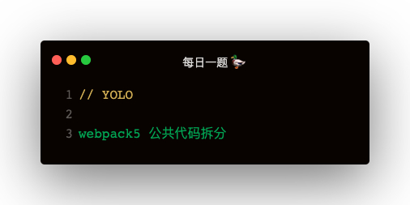
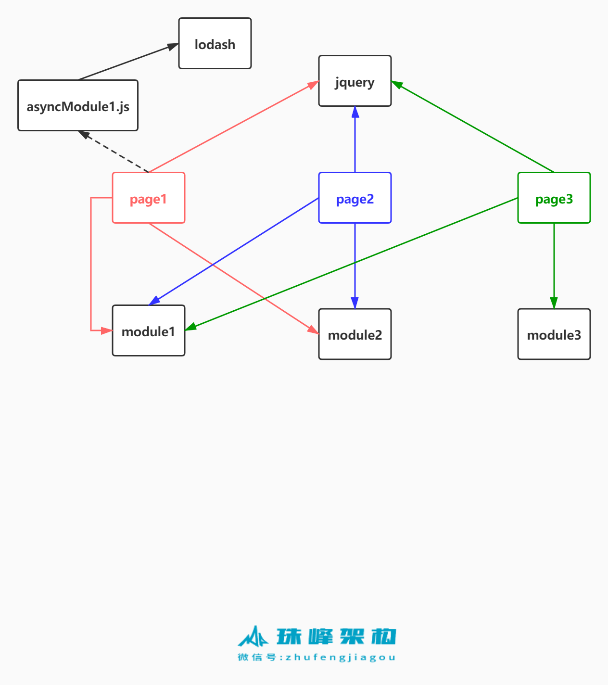

场景

webpack 的默认拆分
默认不配置 splitChunks，出来四个打包文件
- page1.js
- page2.js
- page3.js
- 3.js
splitChunks
webpack 公共代码拆分主要依赖 SplitChunksPlugin，配置 optimization
optimization: {
splitChunks: {
async：只提取动态 import 代码，initial：提取同步代码（直接引入的模块），all：所有
chunks: 'async | all | initial',
分割出去的代码块的最大最小体积，0表示不限制
minSize: 0,
maxSize: 0,
如果此模块被多个入口引用几次会被分割
minChunks: 1,
异步请求和同步请求最多分割出去多少个代码块
maxAsyncRequests: 30,
maxInitialRequests: 30,
名称的分割符 vendors~main.js => page1~module1_jsf51c7e26.js
automaticNameDelimiter: '~',
缓存组配置 配置如何对模块分组相同分组会分到一个代码块中
cacheGroups: {
第三方模块
defaultVendors: {
如果模块的路径匹配此正则的话
test: /[\\/]node_modules[\\/]/,
很多缓存组，如果一个模块同属于多个缓存组，应该分到哪个组里，看优先级高
priority: -10,
是否可复用现有的代码块，如果为 true 则表示如果当前的 chunk 包含的模块已经被抽取出去了
reuseExistingChunk: true
},
default: {
此模块最几个入口引用过，最少2个才取提取
minChunks: 2,
priority: -20,
reuseExistingChunk: true
}
}
}
}